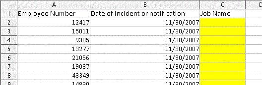

Multi-Condition Data Retrieval
2019/03/09How to use R and SQL to Circumvent Technology Limitations on Large, Multi-Condition Queries
Sometimes our standard business intelligence tools can fail if clients ask for data the tools are not structured to report on. One example I run into fairly often in Human Resources analytics is when a client asks for data regarding a long list of employees on many distinct dates. Often they'll come to me with an Excel file that has a couple columns of data - a list of employee numbers and a list of different dates. They'll ask to join my data to theirs.
The environment I work in is well-equipped for simple queries where only one dynamic condition needs to be met. For instance, it is easy to retrieve data about a list of employees as of a single, specific date. In that case, the only condition that changes is the employee number, like in the spreadsheet below.

The stock BI tools typically work fine in this scenario with one changing variable - employee number - and one static variable - date. However, it is a different story when the data has two changing variables (notice the different dates below).

For scenarios where multiple conditions need to be met, such as multiple employees and multiple dates, limitations of standard BI tools can get in the way, especially for large data retrievals on the order of, say, 50,000 rows. These are some of the challenges that you may face:
- BI drag-and-drop filters are built to handle one condition at a time (either a list of employee numbers or a list of dates, but not one list of employee number and date pairs)
- BI tools often have limitations around the number of items that you can include in a filter, typically 1,000
- Database connections may timeout
- The ability to write temporary tables on the database may be restricted
In this post we will make multi-condition data retrieval easier by doing the following:
Before I share my solution, I want to be clear that the following methodology is not for everyone. This process meets the need in my environment and I hope some of you will benefit from this post.
The raw code is here.
Client Data
We'll start with Excel to see the file the client has provided. Here is a link to the file and here is a screengrab:

The client has privided us with a list of employee numbers and dates and asked us to populate the `Job Name` field. So the client wants to know what job title - if any - the employee had on that date.
Let's move to R and and import our data using readxl. We'll load the other libraries we'll need as well. Since the data is stored on GitHub, we will use the httr package to download the file and write it to disk in a temp file prior to importing with readxl's read_excel function.
library(RMariaDB)
library(tidyverse)
library(openxlsx)
library(readxl)
library(httr)
temp_file <- tempfile(fileext = ".xlsx")
req <- GET("https://raw.githubusercontent.com/harryahlas/sample-hr-database/master/data/JohnsonLitigationResearch.xlsx",
# write result to disk
write_disk(path = temp_file))
input_data <- read_excel(temp_file)
We can remove the `Job Name` field since it will be replaced. Additionally, let's update the date field to a date format to help with joins later.
input_data <- input_data %>% select(-`Job Name`) %>% mutate(`Date of incident or notification` = as.Date(`Date of incident or notification`))
The HR Sample Database and Connecting to R
We will pull the job name data from the HRSAMPLE MySQL database I have created. You can install MySQL and HRSAMPLE on your machine using the instructions here in around an hour.
Use the RMariaDB package to connect to HRSAMPLE and take a look at the tables available.
HRSAMPLE <- dbConnect(MariaDB(),
user='newuser',
password='newuser',
dbname='hrsample',
host='localhost')
dbListTables(HRSAMPLE)
[1] "deskhistory" "deskjob"
[3] "employeeinfo" "hierarchy"
[5] "performancereview" "salaryhistory"
The deskhistory and desk_id tables have what we need. The deskhistory table has a history of employee desk_ids (positions) in the company. The deskjob table shows what jobs belong to each desk_id. We can join the two tables to determine what job the employees had on any date.
Create a test SQL query
Before building our final SQL query, which will have some complexity due to the placeholders, it is usually a good idea to create a short test script with hard-coded conditions. Test scripts are easier to debug and help ensure your query is solid. Below is a sample SQL script called mcdr_test.sql. This script retrieves employee number 43349's job on December 5, 2003.
SELECT
'2003-12-05' AS "Date of incident or notification",
DH.employee_num,
DH.desk_id,
DJ.job_name
FROM
`hrsample`.`deskhistory` DH,
`hrsample`.`deskjob` DJ
WHERE
DJ.desk_id = DH.desk_id
AND DH.employee_num = 43349
AND DH.desk_id_start_date <= DATE('2003-12-05')
AND DH.desk_id_end_date <= DATE('2003-12-05') ;
The script has been saved online (code below needs to be updated with link to github)and you can run it using the code below in R. You can see employee 43349 was a Consultant on 12/5/2003.
test_sql <- read_file("scripts/mcdr_test.sql")
test_df <- dbGetQuery(HRSAMPLE, test_sql)
test_df
Date of incident or notification employee_num desk_id job_name
1 2003-12-05 43349 228 Consultant
Add Placeholders to the SQL
Now that we have a functional script that works with one employee_num and one and Date of incident or notification, we can scale the script by adding placeholders. The placeholders can be replaced with the multiple conditions that the client has provided.
In this request, we have two conditions that can change: employee_num and Date of incident or notification. In our new SQL script, let's replace employee_num with %EMP_ID% and for Date of incident or notification let's use %DATE_ID%. The new code with the placeholders, which we'll save as mcdr.sql, looks like this:
SELECT
DATE('%DATE_ID%') AS "Date of incident or notification",
DH.employee_num,
DH.desk_id,
DJ.job_name
FROM
`hrsample`.`deskhistory` DH,
`hrsample`.`deskjob` DJ
WHERE
DJ.desk_id = DH.desk_id
AND DH.employee_num = %EMP_ID%
AND DH.desk_id_start_date <= DATE('%DATE_ID%')
AND DH.desk_id_end_date >= DATE('%DATE_ID%') ;
So we now have a script we can iterate through with different variables. We can replace %EMP_ID% and %DATE_ID% with the data in each row of the client's worksheet. (Note the % signs in the placeholders are cosmetic and not required.)
Before we iterate through the entire client spreadsheet, let's do a final test on one row of the client data to make sure the script with the placeholders works. We'll use base R's gsub function to fill the placeholders with the client's data. For this example we'll subset row [2] of the data for the replacement arguments. UPDATE CODE BELOW
# Import sql script with placeholders
mvdr_sql_placeholder <- read_file("scripts/mcdr.sql")
# Replace placeholders with sample employee_num and date
mvdr_sql <- mvdr_sql_placeholder %>%
gsub(pattern = '%EMP_ID%',
replacement = input_data$`Employee Number`[2],
x = .) %>%
gsub(pattern = '%DATE_ID%',
replacement = input_data$`Date of incident or notification`[2],
x = .)
# Retrieve data
df_one_row <- dbGetQuery(HRSAMPLE, mvdr_sql)
df_one_row
Date of incident or notification employee_num desk_id job_name
1 2007-05-20 15011 88 Regional Leader
The code is working and is ready to be run through the client data.
Ready to Go - Let's Iterate
We will use a for loop to retrieve the data, one loop and retrieval for each row of client data. This is not the fastest way to pull data (and certainly not the only way) but there are several advantages to this method that I will discuss at the end of this post.
To start, we will create an empty data frame called df. As we cycle through the client data, we'll append our results to df.
df <- tibble()
Next, we'll start our for loop. Again, this will be one iteration per row. So i will be the same as the row number of the input data.
for (i in 1:nrow(input_data)) {
Once we are in the for loop, we will repeat the same code we used in the previous test run, with three changes:
- Add
[i]to subsetinput_data$`Employee Number` - Add
[i]to subsetinput_data$`Date of incident or notification` - Save the retrieved data to a temporary data frame called
df_temp
# Replace placeholders with employee_num and date
mvdr_sql <- mvdr_sql_placeholder %>%
gsub(pattern = '%EMP_ID%',
replacement = input_data$`Employee Number`[i],
x = .) %>%
gsub(pattern = '%DATE_ID%',
replacement = input_data$`Date of incident or notification`[i],
x = .)
# Retrieve data to temporary table
df_temp <- dbGetQuery(HRSAMPLE, mvdr_sql)
The last piece of the for loop will append the temporary data df_temp to the prior retrievals in df.
# Append data to previous retrievals df <- bind_rows(df, df_temp) }
Running the code above will create a data frame with the information the client needs.
Export to Excel
To make things easy on the client, we'll make our process look as seamless as possible. We'll export an Excel file that looks nearly identical to what the client provided. We'll start with our input_data data frame and join it to the new data from our for loop.
I should add I try to add some realism to these examples when I can and a couple of those pieces are on display here. The client has asked for data that may not exist. They may ask for employee information on a date that the employee was not with the company. Maybe the team member had terminated prior to that date. In those cases, our query retrieves NAs. We'll use the replace_na to add context for those NAs: not with company at this time. We will even format the job name and employee number columns to match what was on the client's spreadsheet.
output <- input_data %>%
left_join(df %>% select(-desk_id),
by = c("Date of incident or notification",
"Employee Number" = "employee_num")) %>%
replace_na(list(job_name = "not with company at this time")) %>%
rename(`Job Name` = job_name)
Last, we'll use openxlsx to export to Excel. For this example we will export a single tab. Normally, I would include a second disclaimer tab, which I strongly recommend and discuss in another blog post called Use R to add a Data Disclaimer to an Excel Report.
wb <- createWorkbook() addWorksheet(wb, "HR data needed with output") writeDataTable(wb, 1, output) saveWorkbook(wb, "output/Johnson litigation research with job_name.xlsx", TRUE)
Final Thoughts
There are several different ways to approach a multi-condition query, so why did I choose this way? You may be wondering these questions:
- "Why did Harry do it this way?"
- "Why run one query per row?not build a single query en"
- "Why not just make a single SQL query?"
- "Why didn't Harry just create a temporary table on the server?"
All valid questions. Running 1 query per row is highly inefficient. A few notes you might be wondering about. I often add a disconnect/reconnect snippet in order to prevent the database from timing out. You won't face that issue here since it is a local machine. Also, if you need to improve performance, you could paginate and do something like 1,000 rows at a time. For my needs, the one at a time approach works and is easier to debug. Also answer why we are doing this, this example only has a few rows, why a single gigantic script won't work, timeouts etc